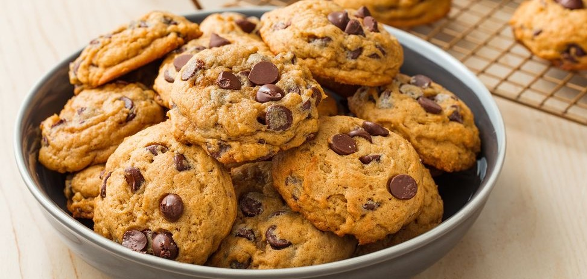

Ingredients for 48 servings
| All-purpose flour |
2¼ cups |
| Baking soda |
1 teaspoon |
| Salt |
1 teaspoon |
| Softened Butter |
1 cup |
| Granulated sugar |
½ ~ 1 cup |
| Packed brown sugar |
½ ~ 1 cup |
| Egg |
1 |
| Vanilla |
1 teaspoon |
| Semisweet chocolate chips |
2 cups |
| Coarsely chopped nuts, if desired |
1 cups |
Directions
- Heat oven to 375°F. In small bowl, mix flour, baking soda and salt; set aside.
- In large bowl, beat softened butter and sugars with electric mixer on medium speed, or mix with spoon about 1 minute or until fluffy, scraping side of bowl occasionally.
- Beat in egg and vanilla until smooth. Stir in flour mixture just until blended (dough will be stiff). Stir in chocolate chips and nuts.
- Onto ungreased cookie sheets, drop dough by rounded tablespoonfuls 2 inches apart.
- Bake 8 to 10 minutes or until light brown (centers will be soft). Cool 2 minutes; remove from cookie sheet to cooling rack. Cool completely, about 30 minutes. Store covered in airtight container.
Expert Tips
- For best results, bake cookies on middle oven rack. For even baking, it’s best to bake one sheet at a time.
- The best cookie sheets are shiny aluminum with a smooth surface and no sides. They reflect heat, letting cookies bake evenly and brown properly. Rimmed baking sheets are excellent for many things, but not for cookie making.
- To ensure success in baking, measure ingredients accurately using the right measuring equipment for the ingredient being measured. For best results, add ingredients in the order they are called for.
- The best way to measure flour is to first stir the flour a bit before spooning into the measuring cup. Fill until heaping, and then sweep the excess off the top with the flat edge of a butter knife.
- Line flat cookie sheets with parchment for easy cleanup. Be sure to give the dropped dough plenty of air space, so the cookies won’t bump into each other as they spread.